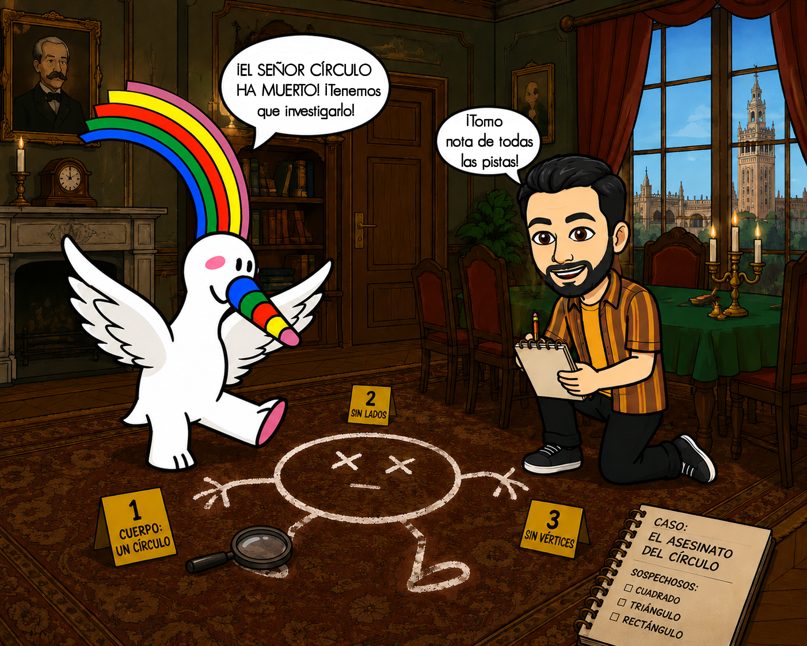
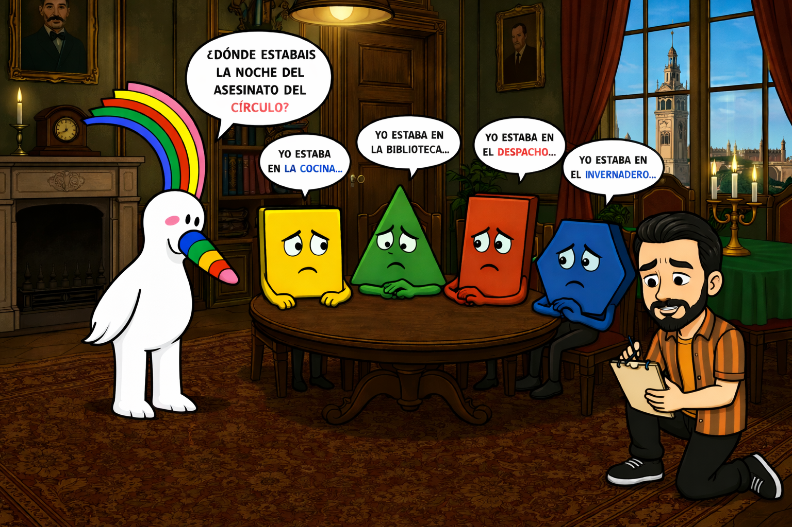
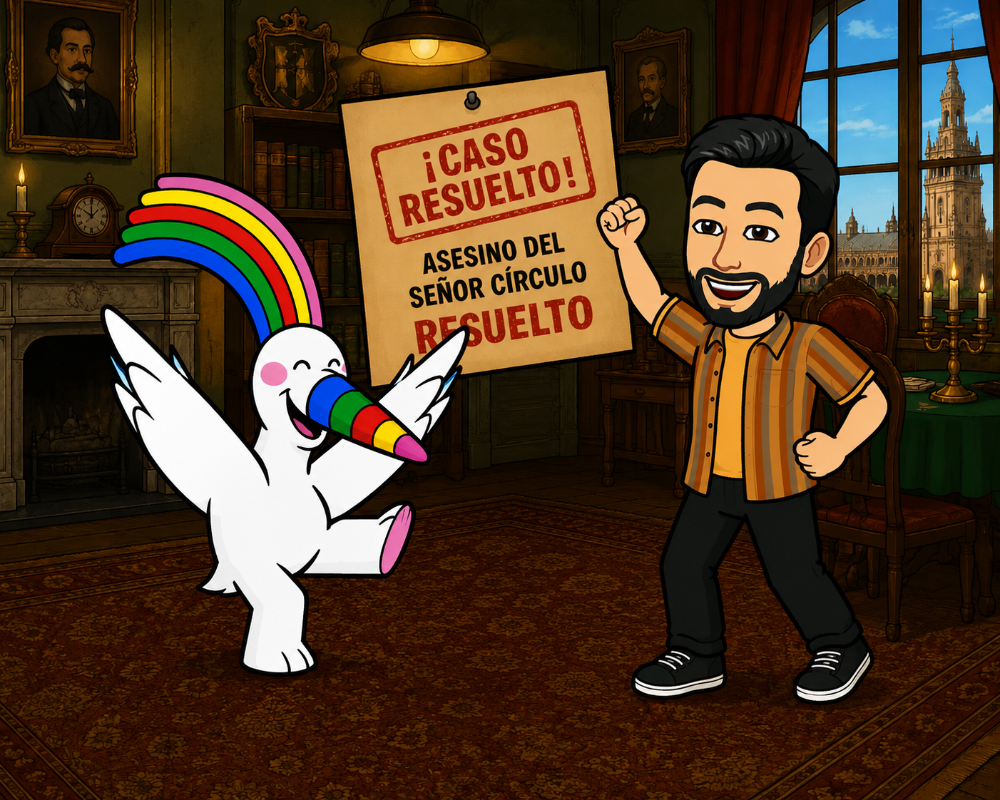
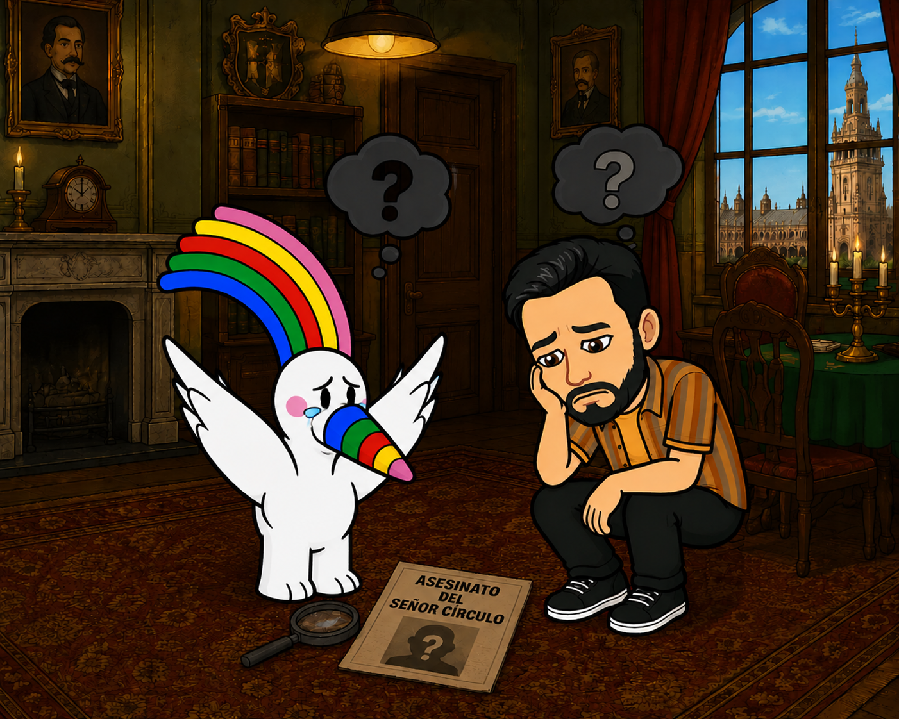

Curro y el misterioso asesinato de Círculo

INSTRUCCIONES DEL CASO:
Con vistas a la Giralda, en la casa de Geometría, el señor Círculo ha sido asesinado en el salón-comedor. Sabemos que el asesino tiene una edad igual a su área y que su edad exacta es de 48 años. Además, la pista definitiva del inspector Curro dice que el asesino mide exactamente 4 metros de altura y ya estaba dentro del salón comedor fingiendo otra coartada.
Deberás calcular las áreas de todos los sospechosos, para ello puedes usar papel y lápiz, o apoyarse en esta hoja auxiliar para tus cálculos. ¡Cuidado! Los sospechosos regulares ocultan su apotema; búscala usando el Teorema de Pitágoras.
Selecciona el tiempo de la investigación:
Nota: Pedir el panel de fórmulas restará tiempo (5 min en modo 30 min / 10 min en modo 60 min).
Autor: Joaquín Candañedo.
Ficha del Caso

• Cuadrado: "Estaba en la cocina. Mis 4 lados miden 6 metros cada uno."
• Rectángulo: "Estaba en la biblioteca. Mi base es de 12 metros y mi altura es de 4 metros."
• Rombo: "Estaba en el baño. Mi diagonal mayor mide 16 metros y la menor 6 metros."
• Romboide: "Estaba en el jardín. Comparto base con el rectángulo (12 m), pero mi altura es de 3 metros."
• Triángulo: "Estaba en el sótano. Mi base mide 16 metros y mi altura es de 6 metros."
• Trapecio: "Vigilaba la puerta exterior. Mi base mayor es de 14 m, la menor es de 10 m y mi altura es de 4 m."
• Pentágono Regular: "Estaba en la terraza. Mis 5 lados miden 6 metros cada uno. La distancia del centro al vértice (radio) es de 5.1 metros." (¡Calcula la apotema!)
• Hexágono Regular: "Estaba en el ala oeste. Mi lado y mi radio miden 4 metros." (¡Calcula la apotema!)
Fórmulas de Ayuda:
- Cuadrado: $A = l^2$
- Rectángulo y Romboide: $A = b \cdot h$
- Triángulo: $A = (b \cdot h) / 2$
- Rombo: $A = (D \cdot d) / 2$
- Trapecio: $A = ((B + b) \cdot h) / 2$
- Polígonos Regulares: $A = (Perímetro \cdot apotema) / 2$
- Teorema de Pitágoras para apotema: $Radio^2 = (Lado/2)^2 + apotema^2$
Introduce las Áreas Calculadas (Edades):
¿QUIÉN ES EL CULPABLE?
¡Caso Cerrado!

¡Excelente trabajo, inspector!
Has calculado correctamente todas las edades (áreas) y descubierto que el Rectángulo mentía. Su coartada era falsa, su área es de 48 y su altura de 4 metros encaja perfectamente con el hilo de seda del picaporte.
Don Círculo por fin descansa en paz en el gran plano cartesiano.
Caso Irresuelto / Error de Deducción

El asesino ha escapado o has acusado a un inocente...
Alguna de las áreas calculadas es incorrecta o el culpable seleccionado no es el verdadero asesino. ¡Revisa bien tus operaciones y el Teorema de Pitágoras!